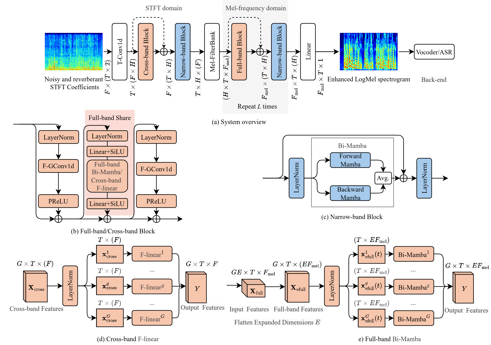

CleanMel is a single-channel Mel-spectrogram enhancement framework that predicts clean
Mel-spectrograms from noisy and reverberant speech. The enhanced Mel-spectrograms can be
converted to waveforms by a neural vocoder or directly used as input to automatic speech
recognition (ASR) systems. CleanMel uses interleaved narrow-band and cross-band processing,
where the cross-band block learns full-band spectral patterns through a frame-independent
across-frequency projection; however, this projection does not model how these patterns
evolve over time. To address this limitation, we propose CleanMel+, which investigates
Full-band bidirectional Mamba for modeling the temporal evolution of full-band spectral
patterns in CleanMel's cross-band processing, with a tunable expansion of the hidden
dimension to increase representation capacity. Experiments on five English and one Chinese
public datasets show that CleanMel+ improves Perceptual Evaluation of Speech Quality (PESQ)
scores and ASR performance compared with CleanMel.
Model Architecture

Overview of CleanMel+. The cross-band linear projection of CleanMel is replaced by full-band bidirectional Mamba, modeling the temporal evolution of full-band spectral patterns.
Audio Samples
Enhanced waveforms are reconstructed from the enhanced Mel-spectrograms with the Vocos vocoder.
“—” means no result / clean reference is available for that utterance (e.g., real-recorded data has no clean reference).